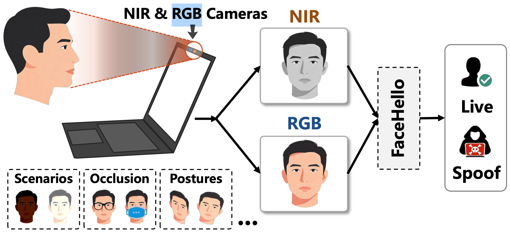

FaceHello: A Reliable Evidence Chain Framework for NIR-RGB Face Liveness Detection
IEEE Transactions on Information Forensics and Security (TIFS) · Under review
Exploring intelligent systems
and the security behind them.
I am a postgraduate student in Cybersecurity at City University of Hong Kong. I received my bachelor's degree in Cyberspace Security from Huazhong University of Science and Technology, where I also completed a minor in Law.
I am a remote research assistant at the Institute of Automation, Chinese Academy of Sciences, working on multi-agent deep reinforcement learning for routing in dynamic UAV networks. My previous research focused on face liveness detection and biometric authentication.

IEEE Transactions on Information Forensics and Security (TIFS) · Under review
AI宝贝 Volunteer Team, HUST · Mar 2023 — Jun 2026
Served as a technical team member, deputy lead, and lead, using AI image restoration to support families searching for missing relatives.
Hyacinth Volunteer Teaching Team · Summers 2023 & 2024
Participated in a 21-day teaching program in 2023 and led the team in 2024. Recognized as an outstanding volunteer in Ezhou (2023); the team received provincial and municipal volunteer service recognition in 2024.